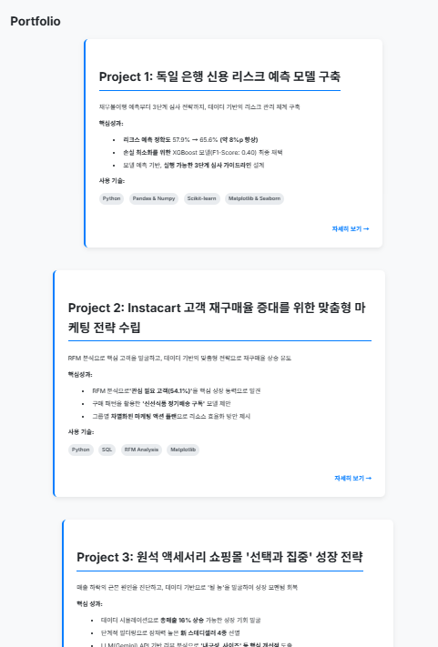
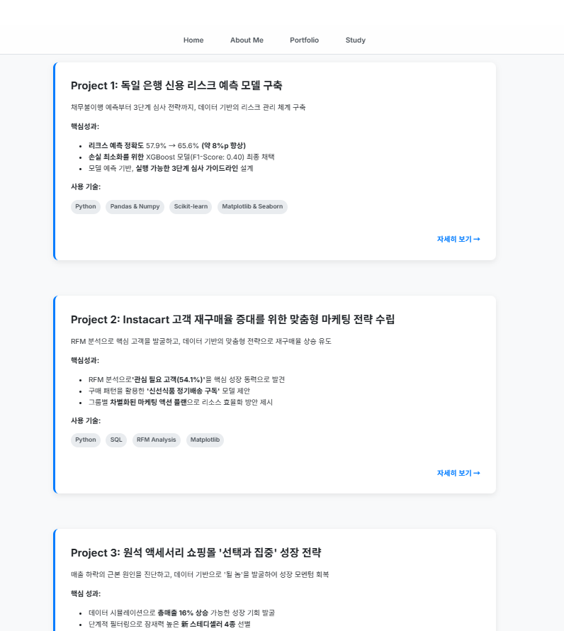
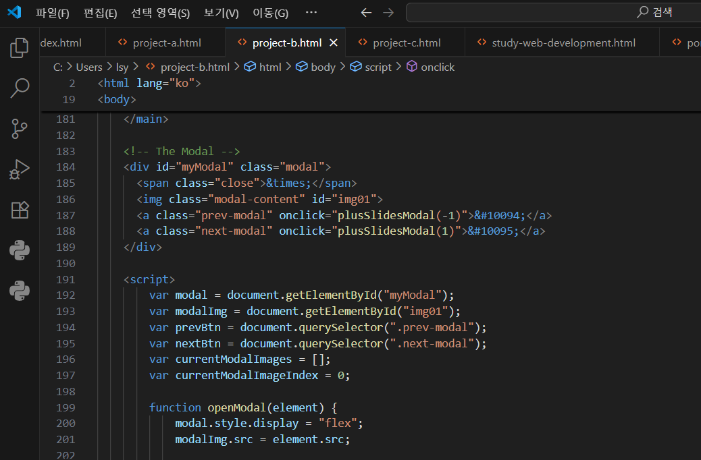

포트폴리오 웹사이트 제작기:
막힘과 깨달음으로 채운 웹 개발 첫걸음
'나만의 포트폴리오 사이트를 만들자'고 결심했을 때, 어디서부터 시작해야 할지 막막했습니다. Tailwind CSS와 몇 가지 라이브러리만 있으면 뚝딱 만들어질 줄 알았던 제가 얼마나 순진했는지, 이제야 깨달았습니다.
이 글은 웹사이트를 만들면서 마주한 크고 작은 문제들과 그 해결 과정을 솔직하게 기록한 제작기입니다. 처음엔 '어떻게 하면 빨리 만들까'에만 집중했지만, 결국 '왜 이렇게 작동하는가'를 이해하는 과정을 거치면서 앞으로 나아갈 수 있었습니다.
배경: 빠르게 만들고 싶은 마음과 현실
처음에는 LLM의 도움으로 Tailwind CSS와 HTML만 조합하면 빠르게 멋진 포트폴리오가 완성될 줄 알았습니다. 하지만 막상 작업을 시작해 보니 생각처럼 되지 않았습니다. 문제없어 보이던 코드도, 구조가 조금만 어긋나면 전혀 의도하지 않은 결과를 출력했습니다.
제작 과정: 삽질 속에서 찾은 답들
1. CSS 충돌과 우선순위: 스타일이 내 맘대로 안 될 때
문제 상황
처음 레이아웃을 잡기 위해 Tailwind CSS를 적용했을 때의 그 짜릿함이란! 버튼 하나, 카드 하나를 배치하는 데 몇 줄의 클래스만 붙이면 되는 그 간편함에 완전히 빠져버렸습니다. 하지만 현실은 모든 것이 제가 원하는 방향으로 흘러가지 않았습니다.
문제
h-full 같은 높이 관련 클래스를 아무리 써도 제대로 적용되지 않는 현상이 발생했습니다. 분명히 클래스는 제대로 붙어있는데, 화면에서는 전혀 다른 모습이었어요.
스타일이 안 먹는 이유, 알고 보니 우선순위
처음엔 "Tailwind가 버그가 있나?" 싶어서 클래스를 이것저것 바꿔보기만 했습니다. 하지만 아무리 해도 해결되지 않더군요. 개발자 도구를 보니 문제를 확인할 수 있었습니다.
브라우저 개발자 도구의 Elements 탭에서 확인해보니, 제가 적용한 Tailwind 클래스가 다른 CSS 선언에 의해 덮어씌워지고 있었습니다. Computed 탭을 보니 최종적으로 계산된 스타일이 제가 의도한 것과 완전히 달랐어요. 그리하여 이것저것 직접 바꿔보았습니다.
그제야 CSS 우선순위라는 게 있다는 걸 제대로 알게 됐습니다. 인라인 스타일, ID 선택자, 클래스 선택자... 이런 것들에 각각 우선순위가 있고, Tailwind의 유틸리티 클래스도 예외가 아니라는 거죠.
해결책
모든 걸 Tailwind로만 해결하려던 고집을 버리고, 별도의 style.css 파일을 만들어서 필요한 부분은 직접 스타일을 재정의했습니다. 이때 !important를 마구 쓰고 싶은 마음을 참고, 더 구체적인 선택자(.custom-card .title 같은)를 사용해서 자연스럽게 우선순위를 확보했습니다.
결과적으로 Tailwind의 편리함은 그대로 유지하면서도, 세밀한 조정이 필요한 부분은 완벽하게 컨트롤할 수 있게 됐습니다.
2. Flexbox 레이아웃: 구조를 잘못 짜면 CSS는 소용없다
문제 상황
프로젝트 카드들을 예쁘게 그리드로 배치하고 싶었는데, 자꾸 들쑥날쑥하게 나왔습니다. 분명히 display: flex도 제대로 썼고, Tailwind 클래스도 맞게 적용했는데 말이죠. 처음엔 CSS 속성만 계속 바꿔봤어요.
Elements 탭에서 발견한 숨겨진 범인
한참을 헤매다가 개발자 도구의 Elements 탭을 자세히 들여다봤습니다. 이때야 HTML 구조에 문제가 있음을 알게 되었습니다. 제가 만든 HTML 구조에 불필요한 "div" 태그가 중간중간에 끼어있더라고요.
Flexbox는 직계 자식에게만 적용된다는 걸 그제야 알았습니다. 제가 .portfolio-grid에 display: flex를 적용했지만, 실제로 flex 속성을 받는 건 프로젝트 카드가 아니라 중간의 의미 없는 래퍼 "div"들이었던 거죠.
해결책
답은 의외로 간단했습니다. 불필요한 래퍼를 제거하고 HTML 구조를 깔끔하게 정리했어요.
이 변경만으로 Flexbox가 마법처럼 작동하기 시작했습니다. 카드들이 균일하게 정렬되고, 반응형도 완벽하게 동작했어요. CSS를 아무리 수정해도 안 되던 게, HTML 구조를 제대로 하니까 한 번에 해결되었습니다.
3. 클래스 네이밍: 같은 이름, 다른 스타일의 재앙
문제 상황
디자인이 거의 완성되어 가는데, 갑자기 이상한 일이 벌어졌습니다. portfolio.html에서 잘 되던 스타일이 project-a.html에서는 완전히 다르게 보이는 거예요. 둘 다 똑같은 .portfolio-item 클래스를 쓰고 있었는데 말이죠.
알고보니...
문제는 제가 서로 다른 HTML 파일에서 같은 클래스명을 다른 용도로 사용하고 있었다는 거였습니다. 포트폴리오 목록 페이지의 카드와 프로젝트 상세 페이지의 컨테이너에 둘 다 .portfolio-item이라는 이름을 붙였더니, CSS가 뒤죽박죽 섞여버린 거죠.
해결책과 깨달음
클래스명을 더 구체적이고 명확하게 바꿨습니다. 상세 페이지의 컨테이너는 .project-detail-container로, 각 컴포넌트의 역할이 이름에서 바로 드러나도록 했어요.
이 과정에서 깨달은 건, 클래스 이름 하나하나가 나중에 코드를 읽을 때 얼마나 중요한 힌트가 되는지였습니다. 당장 만들 때는 편하려고 .item, .container 같은 일반적인 이름을 쓰고 싶지만, 프로젝트가 커질수록 이런 모호한 이름들이 발목을 잡더라고요.
4. JavaScript와의 첫 만남: 이미지 모달 만들기
문제 상황
프로젝트 이미지를 클릭하면 큰 화면으로 볼 수 있는 모달 기능을 만들고 싶었습니다. 처음엔 "CSS로 뭔가 할 수 있지 않을까?" 싶어서 이것저것 시도해봤는데, 결국 JavaScript 없이는 불가능하다는 걸 깨달았어요
문제는 JavaScript를 한 번도 제대로 써본 적이 없다는 거였습니다.
복사 붙여넣기부터 시작한 JavaScript 여행
처음엔 구글에서 "이미지 모달 JavaScript"라고 검색해서 나온 코드를 복사 붙여넣기만 했습니다. 당연히 제대로 동작하지 않았죠. 그때부터 정말 기본부터 하나씩 배우기 시작했어요.
document.querySelector가 뭔지, addEventListener는 어떻게 쓰는 건지, DOM이 도대체 뭔지... 하나씩 찾아보면서 이해하려고 노력했습니다.
직접 구현한 모달
그리하여 아래와 같은 코드를 작성할 수 있게 되었습니다.
코드 한 줄 한 줄이 무슨 의미인지 이해하게 되니까, 왜 이렇게 써야 하는지도 보이기 시작했어요. 단순히 이미지를 보여주는 기능 하나 만들면서, 웹페이지가 어떻게 사용자와 상호작용하는지 전체적인 그림이 그려졌습니다.
5. 데이터 시각화: 숫자보다 강력한 건 역시 그래프
배경
Instacart 프로젝트의 RFM 분석 결과를 포트폴리오에 보여주고 싶었는데, 엑셀 표 스크린샷을 올리기엔 너무 밋밋했어요. "차트로 만들면 더 임팩트 있지 않을까?" 싶어서 Chart.js를 써보기로 했습니다.
시각화의 마법
막대 차트와 라인 차트로 데이터를 표현해보니, 정말 다르더라고요. 똑같은 분석 결과인데 숫자로 나열했을 때와 그래프로 보여줬을 때의 전달력이 완전히 달랐어요.
특히 고객 세그먼트별 분포를 막대 차트로, 시간에 따른 변화를 라인 차트로 나타내니까 한눈에 패턴이 보이더라고요. "아, 이래서 사람들이 데이터 시각화를 중요하게 생각하는구나" 싶었습니다.
기술보다 중요한 건 메시지
Chart.js 사용법을 익히는 것보다 더 고민됐던 건, "이 차트로 무엇을 보여줄 것인가?"였어요. 같은 데이터라도 어떤 차트를 선택하고, 어떤 부분을 강조하느냐에 따라 전달되는 메시지가 완전히 달라지더라고요.
결국 기술적인 구현은 수단일 뿐이고, 정말 중요한 건 보는 사람이 쉽게 이해할 수 있도록 정보를 정리하는 것이라는 걸 깨달았습니다.
6. 일관된 UI 구현: 카드 높이 맞추기의 고민
문제 상황
디자인이 어느 정도 완성된 후에도 한 가지 신경 쓰이는 부분이 있었습니다. 프로젝트 카드들의 높이가 제각각이라는 거였어요. 어떤 카드는 설명이 길고, 어떤 카드는 짧다 보니 자연스럽게 높이가 달라지는 건 당연한데, 시각적으로는 영 어색했습니다.
여러 시도들
처음엔 height: 100%를 써보기도 하고, flex-grow도 써봤는데 생각처럼 되지 않더라고요. 그러다가 알게 된 몇 가지 해결책들:
- aspect-ratio 활용: 이미지나 카드의 비율을 고정해서 일정한 높이를 유지
- min-height 설정: 최소 높이를 보장하면서도 내용이 많을 때는 자연스럽게 확장
- Flexbox의 align-items: stretch: 컨테이너 안의 모든 카드가 같은 높이를 갖도록 강제
깨달음
이 과정에서 깨달은 건, 자동으로 "예쁘게" 정렬되는 건 생각보다 어렵다는 거였습니다. 사용자 눈에는 간단해 보이는 것도, 뒤에서는 꽤 많은 계산과 조정이 필요하더라고요.
7. 배포 후 문제 해결: 캐시와의 전쟁
문제 상황
GitHub Pages로 사이트를 배포하고 나서 생긴 황당한 경험입니다. 분명히 코드를 수정하고 푸시했는데, 웹사이트에서는 이전 버전이 계속 보이는 거예요. "배포가 안 된 건가?" 싶어서 GitHub 저장소를 확인해봐도 최신 코드가 올라가 있고...
원인을 찾다
한참을 헤매다가 알게 된 진실: 브라우저 캐시 때문이었습니다. 웹 브라우저는 한 번 방문한 사이트의 파일들(CSS, JavaScript, 이미지 등)을 저장해뒀다가 다음번에 빠르게 로드하려고 합니다. 성능상으로는 좋은 기능이지만, 개발자 입장에서는 함정이 될 수 있더라고요.
해결책과 교훈
강력 새로고침(Windows: Ctrl + F5, Mac: Cmd + Shift + R)으로 캐시를 무시하고 최신 파일을 다시 불러오니까 해결됐습니다.
이 경험을 통해 깨달은 건, 개발할 때는 로컬에서만 테스트하면 안 되고, 실제 사용자가 경험할 환경까지 고려해야 한다는 거였어요. 내 컴퓨터에서는 잘 되는데 다른 사람이 보면 안 된다면, 그건 제대로 된 웹사이트가 아니니까요.
핵심 인사이트: 기본이 답이었다
이번 제작기를 통해 깨달은 몇 가지:
- 대부분의 문제는 최신 기술을 몰라서가 아니라, 기본 동작 원리를 제대로 이해하지 못해서 생긴다.
- 문제가 생겼을 때 겉모습만 보지 말고, 그 아래 구조부터 차근차근 살펴보는 습관이 중요하다.
- "왜 이렇게 될까?"라는 질문을 계속 던지다 보면, 결국 답은 항상 기본에 있다.
웹사이트 만들기는 단순히 코딩 테스트가 아니라, 논리적으로 생각하고 체계적으로 문제를 해결하는 연습이었습니다.
| 도구 / 기술 | 역할 |
|---|---|
| HTML / CSS | 기본 구조 및 시각적 구성 |
| Tailwind CSS | 빠른 레이아웃 설계 |
| style.css | 세부 커스터마이징, 우선순위 조절 |
| JavaScript | 모달 구현, DOM 이벤트 처리 |
| Chart.js | 데이터 시각화 (막대/라인 차트) |
| FontAwesome | 아이콘 구성 |
| GitHub Pages | 정적 사이트 배포 |
마치며
화려한 프레임워크도, 최신 라이브러리도 결국 탄탄한 기초 위에서만 제대로 빛을 발합니다. 이번 포트폴리오 제작을 통해 저는 웹사이트 하나를 만든 게 아니라, '문제를 체계적으로 분석하고 해결하는 방법'을 배운 것 같습니다.
앞으로 어떤 새로운 기술을 접하게 되더라도, 먼저 그 기술이 어떤 원리로 작동하는지, 왜 그렇게 설계됐는지부터 이해하려고 노력할 것입니다.